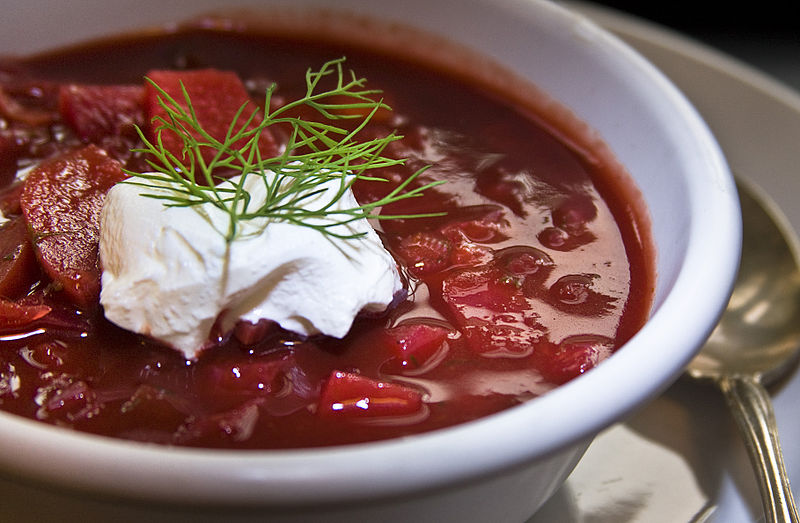

Classic Ukrainian Beef Borscht

Description
This Eastern European beet soup is made with tender chunks of beef tri-tip, potatoes, cabbage, loads of veggies and of course, beets!
This delicious tomato based soup is hearty, warming and perfect anytime of year!
This traditional recipe has been passed down from generation to generation and I have enjoyed this incredible recipe since childhood!
Ingredients
- 1,5 lbs beef tri-tip or roast
- oil for frying
- salt and black pepper
- 2 tbsp butter
- 1 large onion, diced
- 3 medium carrots, diced
- 2 large ribs celery, diced
- 2 cloves garlic, minced
- 0,5 tbsp sugar
- 3 medium beets, peeled and diced
- 4 to 8 cups water
- 1 cup tomato sauce or puree
- 4 to 5 medium young potatoes, cubed
Steps